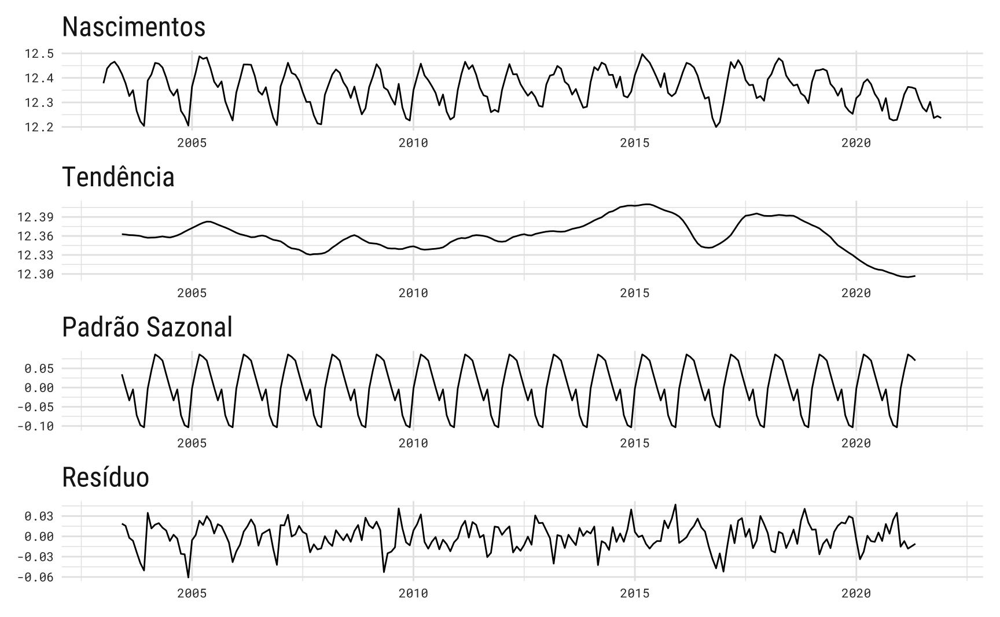

tbl_birth = nasc |>as_tibble() %>% janitor::clean_names() |>select(code_region = grande_regiao_codigo,name_region = grande_regiao,year = ano,month = mes_do_nascimento,birth = valor ) %>%filter(!(month %in%c("Total", "Ignorado"))) %>%mutate(date =paste(year, month, "01", sep ="-"),date =parse_date(date, format ="%Y-%B-%d", locale =locale("pt")),month_abb = lubridate::month(date, label =TRUE, locale ="pt_BR"),month_abb =fct_rev(month_abb),year =as.numeric(year) )tbl_birth <- tbl_birth %>%mutate(trend = RcppRoll::roll_mean(birth, n =12, fill =NA),trend = RcppRoll::roll_mean(trend, n =2, fill =NA),.by =c("code_region", "name_region") )tbl_brazil <- tbl_birth %>%summarise(total =sum(birth, na.rm =TRUE), .by ="date") |>mutate(month_abb = lubridate::month(date, label =TRUE, locale ="pt_BR"),month_abb =fct_rev(month_abb),year =as.numeric(lubridate::year(date)),trend = RcppRoll::roll_mean(total, n =12, fill =NA),trend = RcppRoll::roll_mean(trend, n =2, fill =NA), )
p_heatmap_abs <-ggplot(tbl_brazil, aes(x = year, y = month_abb, fill = total)) +geom_tile(color ="gray80", linewidth =0.1) +scale_x_continuous(breaks =2003:2021, position ="top", expand =c(0, 0)) +scale_fill_viridis_c(name ="",breaks =seq(200, 275, 15) *1000,labels = scales::label_number(big.mark ="."),limits =c(195000, 280000) ) +labs(x =NULL,y =NULL,title ="Arianos e taurinos formam maioria dos nascidos",subtitle ="Número total de nascidos vivos no Brasil entre 2003 e 2021 a cada mês.",caption ="Fonte: Estatísticas do Registro Civil (IBGE). @viniciusoike") + theme_vini
p_heatmap_rel <- tbl_brazil |>group_by(year) |>mutate(share = total /sum(total)) %>%ggplot(aes(x = year, y = month_abb, fill = share)) +geom_tile(color ="gray80", linewidth =0.1) +scale_x_continuous(breaks =2003:2021, position ="top", expand =c(0, 0)) +scale_fill_viridis_c(name ="Percentual\nnascidos\nno ano (%)",labels = scales::label_percent(decimal.mark =".") ) +labs(x =NULL,y =NULL,title ="Arianos e taurinos formam maioria dos nascidos",subtitle ="Número de nascidos vivos no Brasil entre 2003 e 2021 a cada mês.",caption ="Fonte: Estatísticas do Registro Civil (IBGE). @viniciusoike") + theme_vini +theme(legend.title =element_text(family ="Roboto Mono",size =8,vjust =1,hjust =0.5) )
p_lineplot <-ggplot(tbl_brazil, aes(x = date)) +geom_line(aes(y = total), alpha =0.6, linewidth =1, color ="#26828EFF") +geom_line(aes(y = trend), linewidth =1, color ="#26828EFF") +scale_x_date(breaks =c(as.Date("2003-01-01"),seq(as.Date("2005-01-01"), as.Date("2020-01-01"), by ="1 year"),as.Date("2021-01-01") ),date_labels ="%Y" ) +scale_y_continuous(labels = scales::label_number(big.mark =".")) +labs(title ="Nascidos vivos no Brasil", x =NULL, y ="Pessoas") + theme_vini +theme(panel.grid.major =element_line(color ="gray90") )
plot_heatmap <-function( region,breaks =waiver(),share =FALSE,xmin =NULL,xmax =NULL) {stopifnot(any(region %in%unique(tbl_birth$name_region)))stopifnot(is.logical(share)) yvar <-ifelse(share, "share", "birth") sub <- dplyr::filter(tbl_birth, name_region == region)if (share) { sub <- sub |>mutate(share = birth /sum(birth), .by ="year") } if (is.null(xmin)) { xmin <-min(sub[[yvar]], na.rm =TRUE) *0.98 }if (is.null(xmax)) { xmax <-max(sub[[yvar]], na.rm =TRUE) *1.02 } plot <-ggplot(sub, aes(x = year, y = month_abb, fill = .data[[yvar]])) +geom_tile(color ="gray80", linewidth =0.1) +scale_x_continuous(breaks =2003:2021, position ="top", expand =c(0, 0)) if (share) { plot <- plot +scale_fill_viridis_c(name ="Percentual\nnascidos\nno ano (%)",breaks = breaks,labels = scales::label_percent(decimal.mark =","),limits =c(xmin, xmax) ) } else { plot <- plot +scale_fill_viridis_c(name ="",breaks = breaks,labels = scales::label_number(big.mark ="."),limits =c(xmin, xmax) ) } plot <- plot +labs(x =NULL,y =NULL,title = glue::glue("Nascidos vivos: {region}"),subtitle = glue::glue("Número total de nascidos vivos na região {region} entre 2003 e 2021 a cada mês."),caption ="Fonte: Estatísticas do Registro Civil (IBGE). @viniciusoike") + theme_vini +theme(legend.title =element_text(family ="Roboto Mono",size =8,vjust =1,hjust =0.5) )return(plot)}
Tende-se a pensar que a data de nascimento de um indivíduo é algo completamente aleatório. Afinal, ninguém escolhe precisamente quando vai nascer. Alguns atribuem significado profundo à data de nascimento: a depender do horário, dia e mês a pessoa terá tendências a ser mais de uma forma do que outra. Nascer no mês impróprio pode ser um mal negócio para a vida toda.
Já na cultura popular é comum especular que os nascimentos seguem alguns ciclos da vida. As estações do ano regulam as safras de comida, a temperatura, a disposição para sair de casa e, muito acreditam, o desejo sexual. Os feriados, as festividades, o carnaval, as vitórias no campeonato de futebol, tudo isso - imagina-se - tem algum efeito sobre a natalidade no país, nove meses no futuro.
No campo da economia, pode-se especular que os ciclos de crescimento econômico e, sobretudo, os ciclos de desemprego devem ter algum efeito sobre os nascimentos.
O mês de nascimento
Usando dados do IBGE, mais especificamente das Estatísticas do Registro Civil, pode-se calcular o número total de nascimentos em cada mês desde 2003. Grosso modo, nos últimos vinte anos, março, abril e maio foram os três meses com maior número de nascimentos (27,23%). Já os meses do final do ano, outubro, novembro e dezembro foram os meses com menor número de nascimentos (22,95%).
p_heatmap_rel
Isto significa que o maior número de concepções ocorreu no inverno, nos meses de julho a agosto. Já os meses quentes de janeiro a março tiveram os menores números de concepções. Este fato vai diretamente contra a popular percepção de que épocas quentes - e o Carnaval, em particular - favorecem o número de nascimentos.
Olhando para as tendências de médio e longo prazo, vê-se que o número de nascimentos no Brasil permaneceu relativamente estável entre 2000 e 2015, variando de 230 mil a 242 mil nascimentos por mês. A quebra na série coincide com a recessão de 2015-17, período de alta inflação e desemprego recorde: de fato, a série sai do seu pico, acima de 265 mil nascimentos para o seu ponto mais baixo, abaixo de 200 mil nascimentos, neste período.
Warning in prettyNum(.Internal(format(x, trim, digits, nsmall, width, 3L, :
'big.mark' and 'decimal.mark' are both '.', which could be confusing
Warning in prettyNum(.Internal(format(x, trim, digits, nsmall, width, 3L, :
'big.mark' and 'decimal.mark' are both '.', which could be confusing
Warning in prettyNum(.Internal(format(x, trim, digits, nsmall, width, 3L, :
'big.mark' and 'decimal.mark' are both '.', which could be confusing
Warning in prettyNum(.Internal(format(x, trim, digits, nsmall, width, 3L, :
'big.mark' and 'decimal.mark' are both '.', which could be confusing
Warning in prettyNum(.Internal(format(x, trim, digits, nsmall, width, 3L, :
'big.mark' and 'decimal.mark' are both '.', which could be confusing
E, afinal, há sazonalidade nos nascimentos no Brasil? Visualmente, parece haver fortes indícios de sazonalidade. Uma maneira simples de simultaneamente testar e mensurar o efeito sazonal é via uma regressão linear. Supondo um modelo simples da forma1:
\[
B_{t} = T_{t}S_{t}E_{t}
\]
onde \(B_{t}\) é o número ajustado de nascimentos mensais2, \(T_{t}\) é o termo de tendência, \(S_{t}\) é o termo sazonal e \(E_{t}\) é o termo de resíduo. Aplicando logaritmo natural, temos um modelo aditivo. Para modelar a tendência vamos utilizar o mesmo filtro linear utilizado nos gráficos acima, isto é, uma média móvel 2x12 centrada3. Esta estimativa é descontada da série original para chegar num valor sem tendência. Por fim, vamos supor dummies sazonais da forma:
onde \(b_{t}\) agora é o logartimo natural da série de nascimentos livre de tendência. O parâmetro \(\alpha_{0}\) é uma constante e \(\delta_{i}\) é uma variável binária que indica com valor unitário se a observação \(B_{t}\) pertence ao mês \(i\).
A tabela abaixo mostra o resultado da regressão. Assim, como se viu nos gráficos, os três meses do final do ano tem um efeito negativo enquanto os meses de março a maio têm um efeito positivo sobre o número de nascimentos. Além destes, fevereiro e junho aparecem com sinal positivo, mas tem um efeito menor. Agosto também tem um efeito negativo, porém com magnitude inferior aos meses do final do ano.
Warning: The `tidy()` method for objects of class `tslm` is not maintained by the broom team, and is only supported through the `lm` tidier method. Please be cautious in interpreting and reporting broom output.
This warning is displayed once per session.
tab_reg
Characteristic
Beta
95% CI1
p-value
season
1
—
—
2
0.048
<0.001
3
0.089
<0.001
4
0.082
<0.001
5
0.073
<0.001
6
0.037
<0.001
7
0.002
0.7
8
-0.031
<0.001
9
-0.002
0.7
10
-0.069
<0.001
11
-0.095
<0.001
12
-0.101
<0.001
1 CI = Confidence Interval
Visualmente, o resultado da regressão acima pode ser visto no painel abaixo. Note que o padrão sazonal é constante: começa o ano subindo, atinge um pico e aí começa a cair
sub <-window(fitted(fit_lm), start =c(2004, 1), end =c(2004, 12))sub <- broom::tidy(sub)sub$id =1:12ggplot(sub, aes(x = id, y = value)) +geom_line() +geom_point() +geom_hline(yintercept =0) +scale_x_continuous(breaks =1:12) +scale_y_continuous(limits =c(NA, 0.1)) + theme_series +theme(panel.grid.minor =element_blank())

autoplot(mstl(nasc)) + theme_series
Footnotes
Este é um modelo bastente convencional em séries de tempo, também conhecido, modelo “clássico” ou “decomposição clássica”. Veja, por exemplo …↩︎
Becker (1989) sugere corrigir o número de nascimentos pelo número de dias no mês da seguinte maneira: \(\tilde{x}_{t} = x_{t}\frac{365}{12z}\) onde \(z\) é o número de dias do mês.↩︎
Isto é equivalente a fazer primeiro uma média móvel de dozes meses e depois uma média móvel de dois meses. Na prática, todos os termos têm peso 1/12, exceto pelo primeiro e último que têm peso 1/24.↩︎